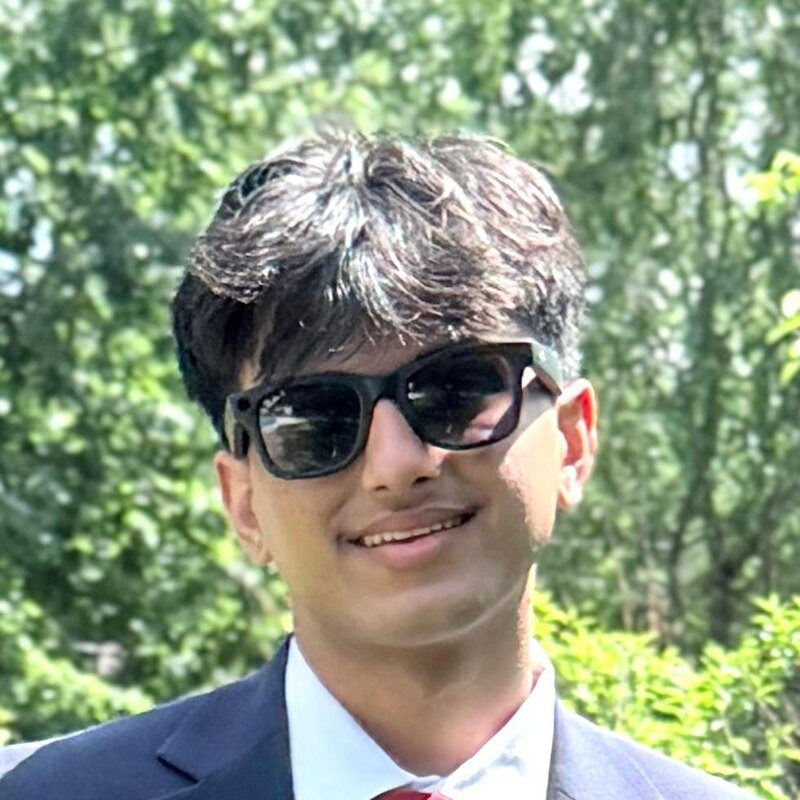

Vedant Tripathi
Leads the vision and direction of Livingston Youth Leaders by identifying meaningful causes, setting annual goals, and driving measurable impact. Ensures every initiative aligns with the chapter's mission while tracking outcomes such as funds raised, participation, and community reach.
Vedant is a senior at Livingston High School. Outside of LYL, he is passionate about Speech & Debate and is Captain of the LHS debate team, a 2026 National Tournament of Champions qualifier who competes at the highest level on the national circuit. Vedant is also part of the LHS tennis team. He volunteers with Sewa International, where he has contributed over 200 hours to disaster relief and community programs. In his free time, he tutors middle and high school students in debate and public speaking.